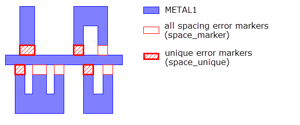

Finding Unique Violations
You can use DFM Property and DFM Classify to output only unique violations from a set of DRC violations. The example constructs error marker polygons using an External operation. The rule check outputs only one error marker from a set of redundant violations. The redundant violations occur when more than one spacing violation occurs between the same two polygons. This is useful for reducing the number of DRC results.
Figure 1. Example of Unique Spacing Violations
Between Polygons

Try It!  |
Calibre Advanced DRC (eqDRC) Tutorial and Example Kit Go to this page on Support Center to download the complete eKit. This example is in the miscellaneous_checks/unique_violations example directory. |